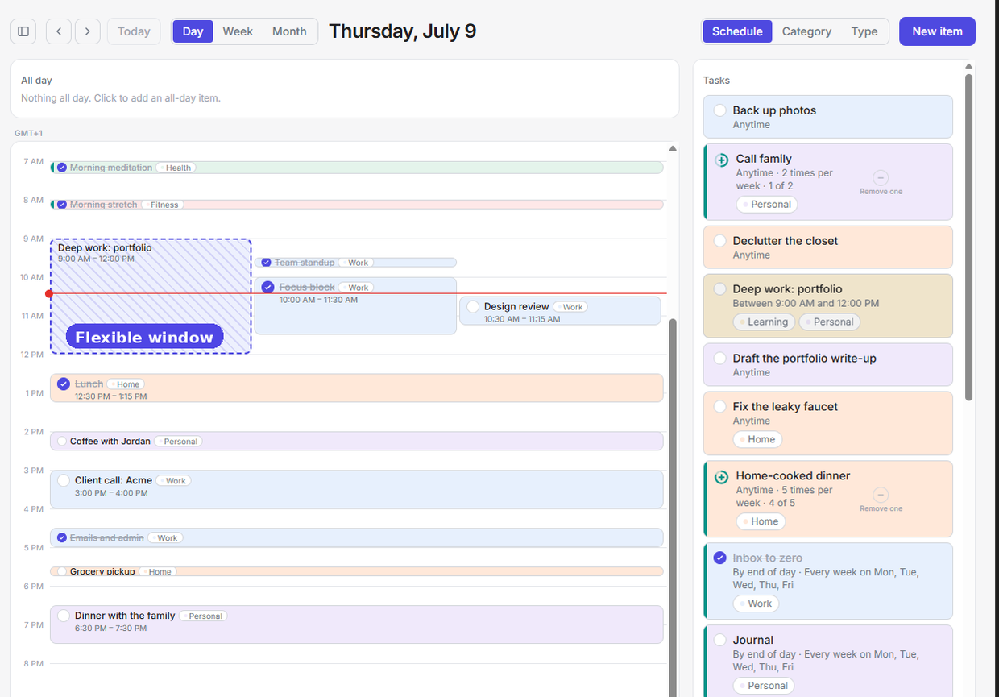
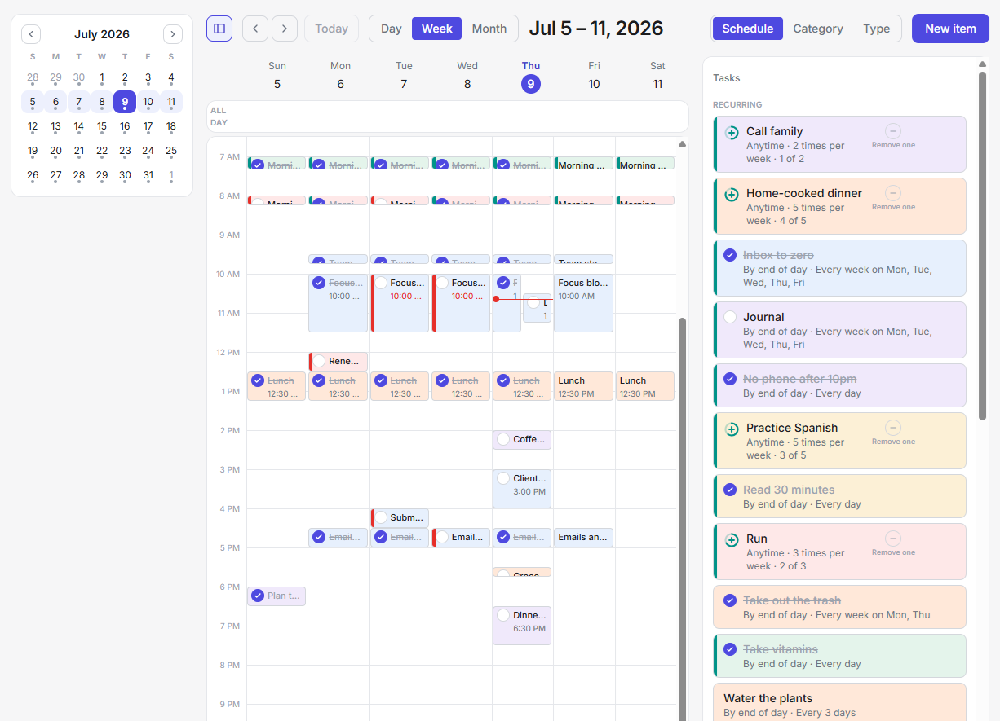
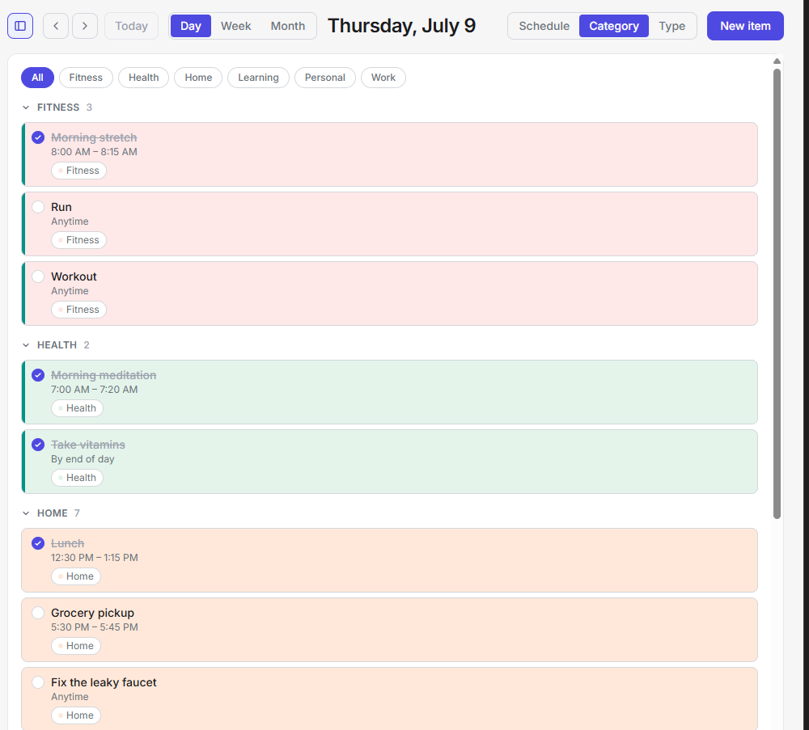
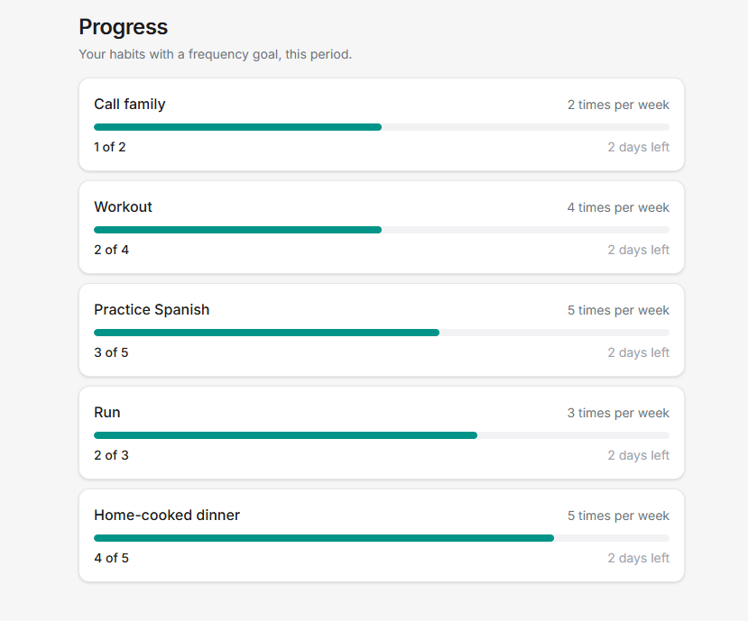

The core idea
One item type, not separate task and habit tools
There is no task-versus-habit choice when you create something. A time, a repeat rule, and habit tracking are independent layers you turn on as needed, so a meeting, a to-do, and a daily practice are the same underlying item shown differently. Repeating something does not make it a habit: a weekly meeting just repeats, while a tracked habit adds consistency measurement on top.
The app

Day view: the planning surface
Week view: the seven-day grid
Category view: by tag
Progress: frequency goalsThe feature set
Flexible scheduling
Items are not forced into a slot or a flat list. Pick how specific the timing is.
- Set time: a date or range with start and end, shown as a block on the grid.
- Timeframe: "do it between X and Y", flexible within the window.
- No set time: a floating to-do or recurring item on the rail.
- All day and By end of day modifiers for whole-day and due-today items.
Repeat & recurrence
One repeat control with two flavors, plus an end condition.
- On a schedule: every N days/weeks/months, weekdays, or a monthly nth-weekday.
- By frequency: N times per period, on the flexible timing modes.
- Ends never, on a date, or after N.
- Rules are date-effective, so editing a repeat never rewrites past history.
Habit tracking
An optional toggle that measures consistency against the item's recurrence.
- No separate target: a count habit's target is its frequency.
- Binary habits use a check; count habits use a ring that fills toward the goal.
- A teal check shows at the goal, with "Log again" for extra completions.
Completion & history
A reversible done state, with a durable record behind it.
- Toggle done per item per day; recurring items reset daily.
- Every completion is stored, powering per-item history and progress.
- Past days stay editable; missed instances are derived on read, never stored.
Ranges & lenses
The same items seen through two independent controls.
- Ranges: Day (P1), plus Week and Month calendar grids (P3).
- Lenses: Schedule (P1), Category by tag (P2), and Type: Habits / Tasks / Events (P3).
- A configurable landing view and a mini-calendar navigator.
The planning surface
The primary surface: a calendar day in three zones.
- An all-day band, a time grid for blocks, and a rail for untimed items.
- Drag a rail item onto the grid to time it; drag a block to reschedule.
- Move day by day; a selected timeframe shows its window on the grid.
Tags & the Category view
User-defined labels as the single organizing layer.
- Any number of tags per item; optional throughout.
- Managed in Settings and inline on the Category headers.
- Group and filter by tag, with an "Untagged" catch-all.
Rich-text notes
A freeform notes field on every item.
- Bold, italic, underline, lists, and links.
- Stored as sanitized HTML; links open in a new tab.
- Round-trips cleanly with Google Calendar descriptions.
Google Calendar sync
The app works alongside an existing calendar.
- Timed and all-day items push to a dedicated app calendar.
- Edits and deletes propagate automatically (with a per-change option).
- Optional read-only inbound events from every visible calendar, color-coded.
- A device-local outbox drains when online, so nothing blocks on the network.
Quantitative progress
A dedicated surface for progress against count goals.
- Lists every habit with a frequency goal (for example, 4 times a week).
- Shows the goal, current-period count, and days remaining.
- Periods snap to calendar boundaries or run as rolling windows.
Local-first foundation
The app lives on the device first and never blocks on the network.
- Fully usable as a guest; an account only turns on sync and backup.
- On first sign-up, guest data migrates into the account.
- Offline is not signed-out; installable as a PWA; conflicts resolve last-write-wins.
Delivered in three phases
Core Experience
The app becomes usable: plan the day, create items, mark them done.
- Local-first store, offline, guest use
- Item create / edit / delete
- The Day grid, band, and rail
- Flexible scheduling & completion
- Accounts, sync & guest migration
Integration & Configuration
The app works alongside an existing calendar and carries richer data.
- Completion history surfaces
- Rich-text notes
- Tags & the Category view
- Google Calendar sync
Views & Quantitative Tracking
See the same items differently, and measure progress against goals.
- Week & Month ranges
- The Type lens; independent range + lens
- Configurable landing view
- The quantitative Progress surface
- Mini-calendar, first day of week, formats